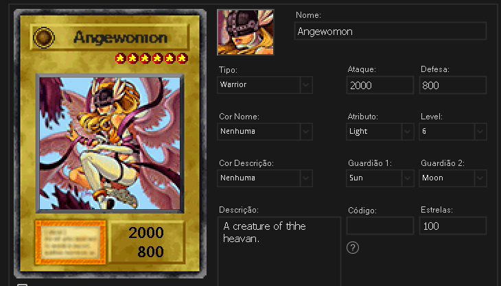
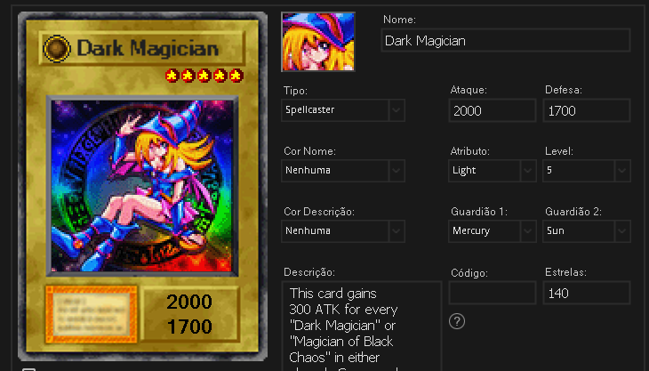

O Mod ainda está em processo de atualizações, sendo esta a versão 1.0, porém já conta com diversas modificações. Não foram alterados os modelos 3D, pois decidimos mantê-los para evitar possíveis bugs futuros. Trabalhamos com todo cuidado especial na seleção das melhores artes para as cartas, aplicando nitidez, contraste, tratamento individual nas cores e filtros. Abaixo, algumas cartas em destaque.
Aplicamos efeitos em algumas cartas, como na Maga Negra, que adiciona 300 pontos em monstros do tipo dark. Além disso, reduzimos os valores das starchips das cartas, eliminando a necessidade de usar trapaças para adquirir cartas mais poderosas. Os oponentes também passaram por modificações, resultando em decks mais semelhantes aos do anime. Agora, eles dropam cartas medianas e também cartas de efeitos mágicos ou armadilhas durante os duelos
